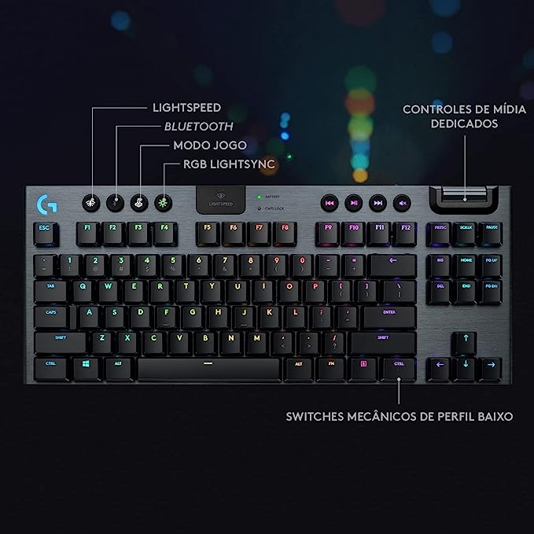
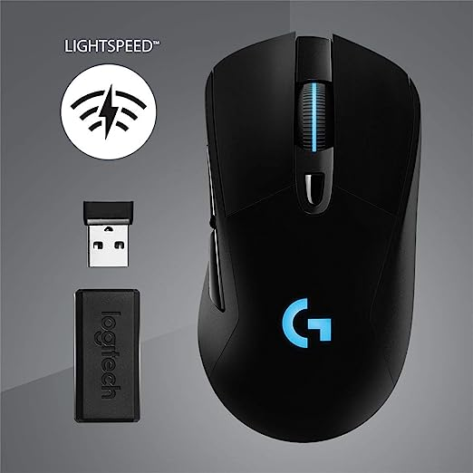
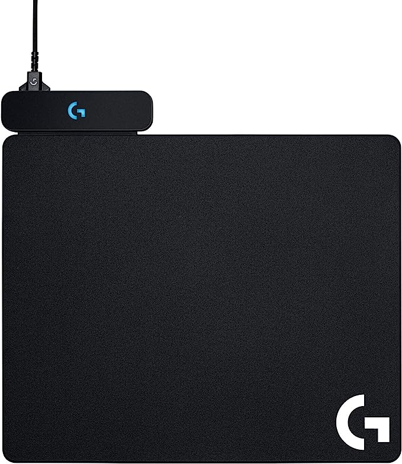
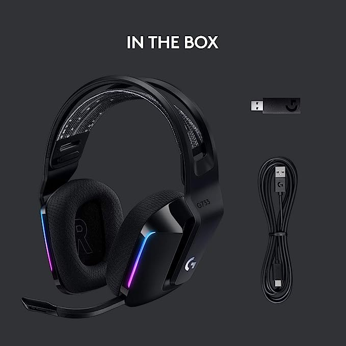
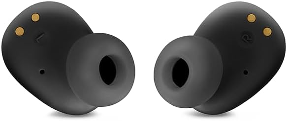

Detalhes dos Produtos
Teclado Mecânico Gamer Sem Fio Logitech G915
- Design compacto tenkeyless
- Teclado sem fio para jogos com tecnologia LIGHTSPEED
- Switches mecânicos GL Tactile de baixo perfil
- 40 horas de duração da bateria
- Conecte-se a vários dispositivos, escolhendo entre USB ou Bluetooth

Mouse Gamer Sem Fio Logitech G703
- Sensor Hero 25K com rastreamento máximo de 25.600 DPI
- Tecnologia sem fio LIGHTSPEED
- Compatível com POWERPLAY
- Design confortável com laterais emborrachadas e peso opcional de 10g
- Tecnologia avançada de botões com tensionamento de botão de mola de metal
- Iluminação LIGHTSYNC RGB: Requer o software Logitech G HUB

Mouse Pad para Carregamento Sem Fio Logitech G Powerplay
- Tecnologia inovadora de carregamento sem fio POWERPLAY
- Receptor integrado sem fio LIGHTSPEED
- Escolha entre duas possibilidades de mousepad - macio ou rígido
- Compatível com os mouses sem fio Logitech G703 e G903.

Headset Gamer Sem Fio Logitech G733
- Tecnologia LIGHTSPEED sem fio com autonomia de bateria de até 29 horas
- Iluminação frontal LIGHTSYNC RGB
- Faixa de cabeça reversível macia e confortável e almofadas dos fones em espuma viscoelástica
- Microfone removível com tecnologia Blue VO!CE através do Software Logitech G HUB
- Design Ultraleve com apenas 278 g

JBL, Fone de Ouvido Sem Fio, Bluetooth
- Som JBL Depp bass/ Bateria de até 32 horas (8 horas no fone+ 24 no estojo de transporte)/ Controle
Touch/IP54: Resistente à poeira e respingos de água(fones) IPX2 (estojo de carregamento)/ Viva voz /
Carga rápida 10 minutos = 2 horas/ Tecnologia Smart Ambient/ Acesso ao aplicativo JBL Headphones/Formato
bud fechado.
- Garantia do produto: 1 ano com o fabricante
- Cor do produto: Preto
